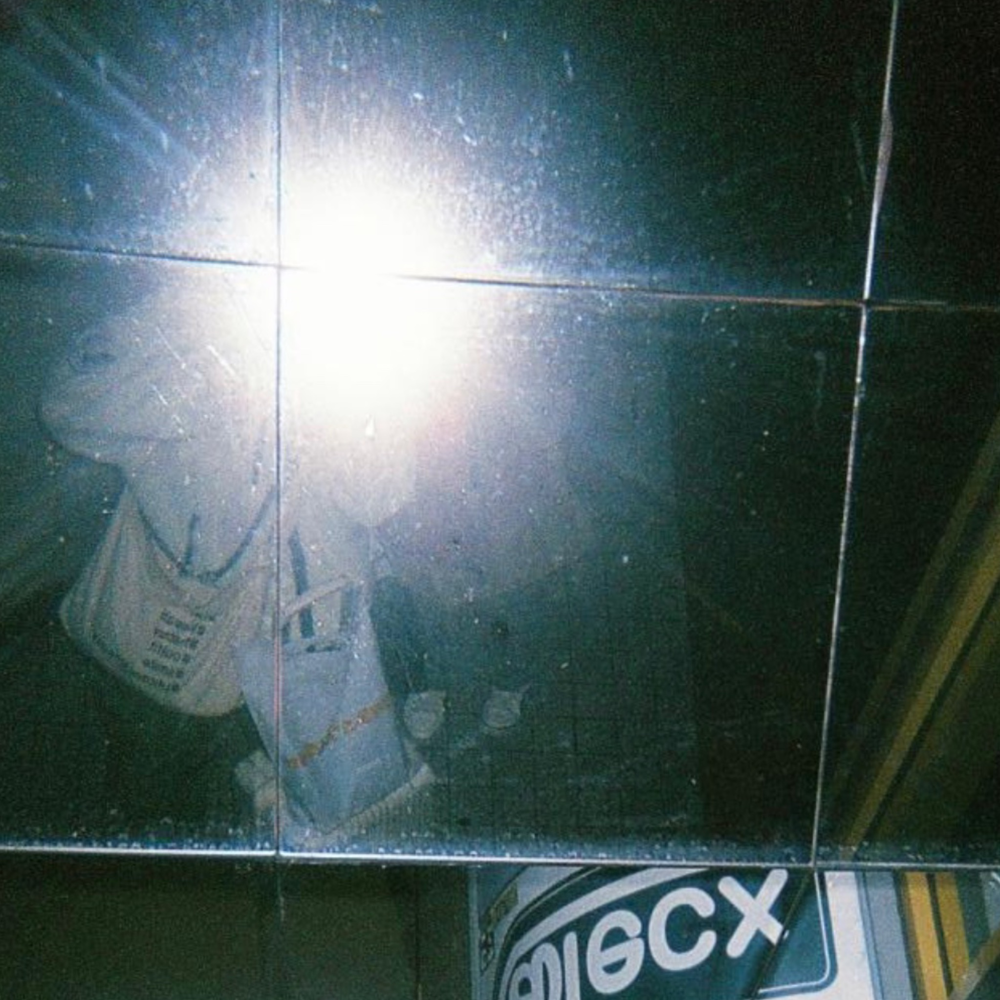
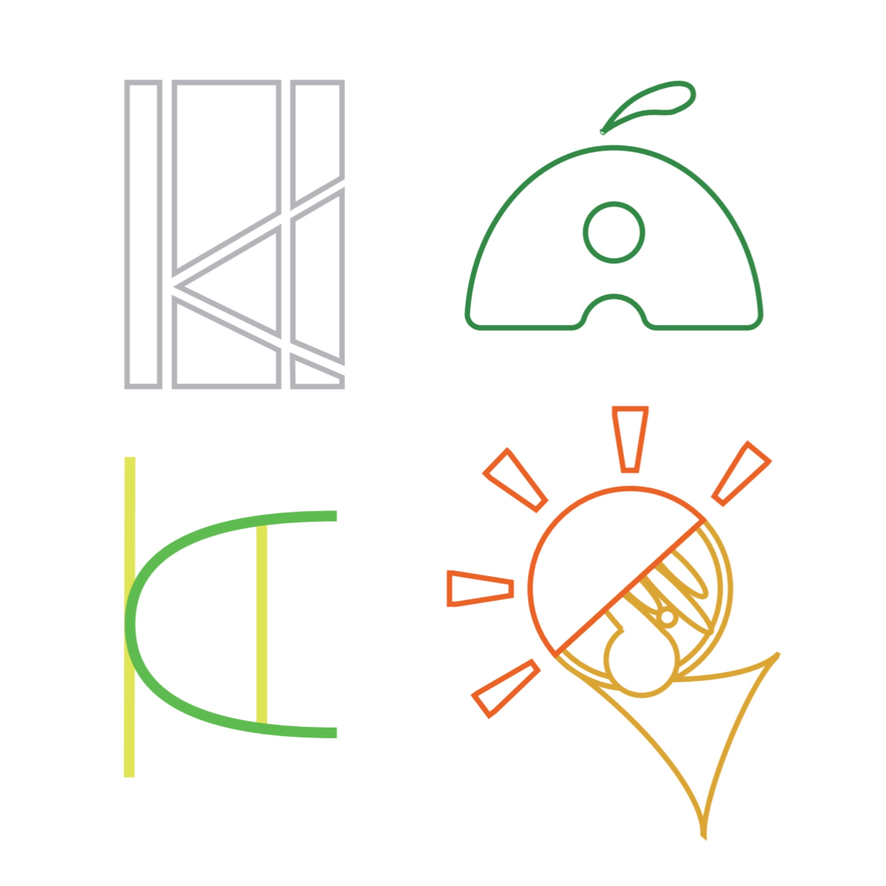
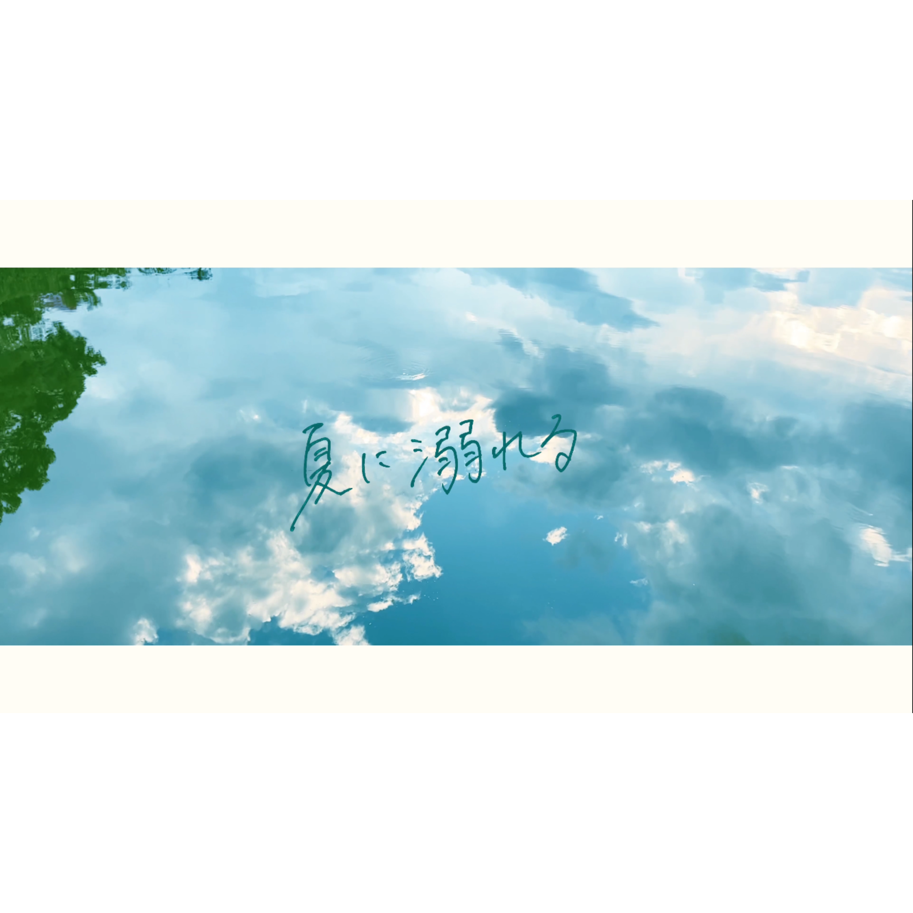
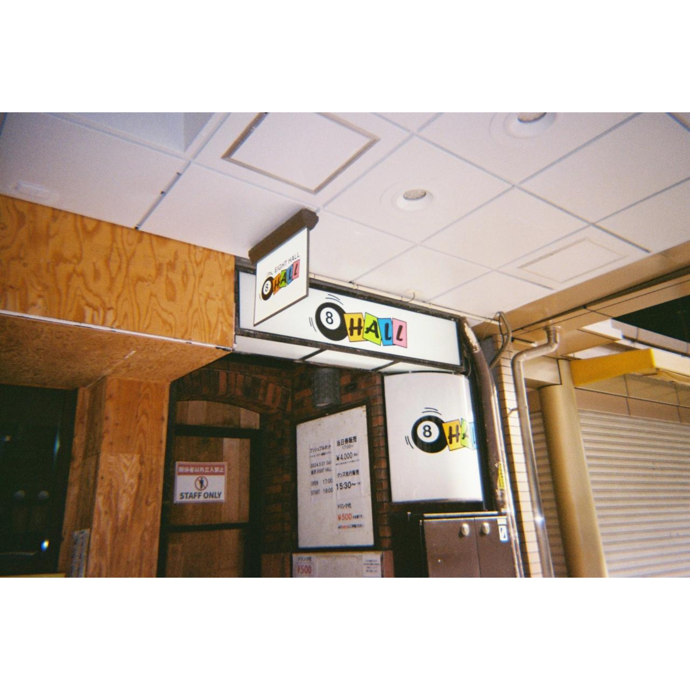

Profile
自己紹介

Name
kajino asahi
Born
2004
From
Aichi
Works
制作実績
-

My Logo
Adobe Illustrator 2023
3時間
-モチーフにした自分の好きなものが一目見ただけで伝わるよう心がけました。同じように変形されたイニシャルでも全く違う印象になるよう工夫しました。
-

Name Card
Adobe Illustrator 2023
3時間
-大学用の名刺とダンスグループ(架空)の名刺を作成しました。大学用はシンプルに、ダンス用はポップに仕上げました。曲線を目線の流れに沿うように用いました。
-

Charactor
Adobe Illustrator 2023
2時間30分
-私の所属する学部のイメージキャラクターを作成しました。ロボットで工業大学の要素を、電波で情報科学部の要素を取り入れてデザインしました。
-

映像制作「夏に溺れる Lilyc Video」
capcut
5日
-Bocchiの“夏に溺れる”という楽曲のリリックビデオを制作しました。楽曲の持つ夏の青に溶けていく雰囲気を表現しました。
-
Film Photo1
KODAK M35
Kodak GOLD200
-石川県金沢市にある尾山神社をフィルムカメラで撮影しました。
-

Film Photo2
KODAK M35
Kodak GOLD200
-石川県金沢市にあるライブハウス、金沢EIGHT HALLをフィルムカメラで撮影しました。